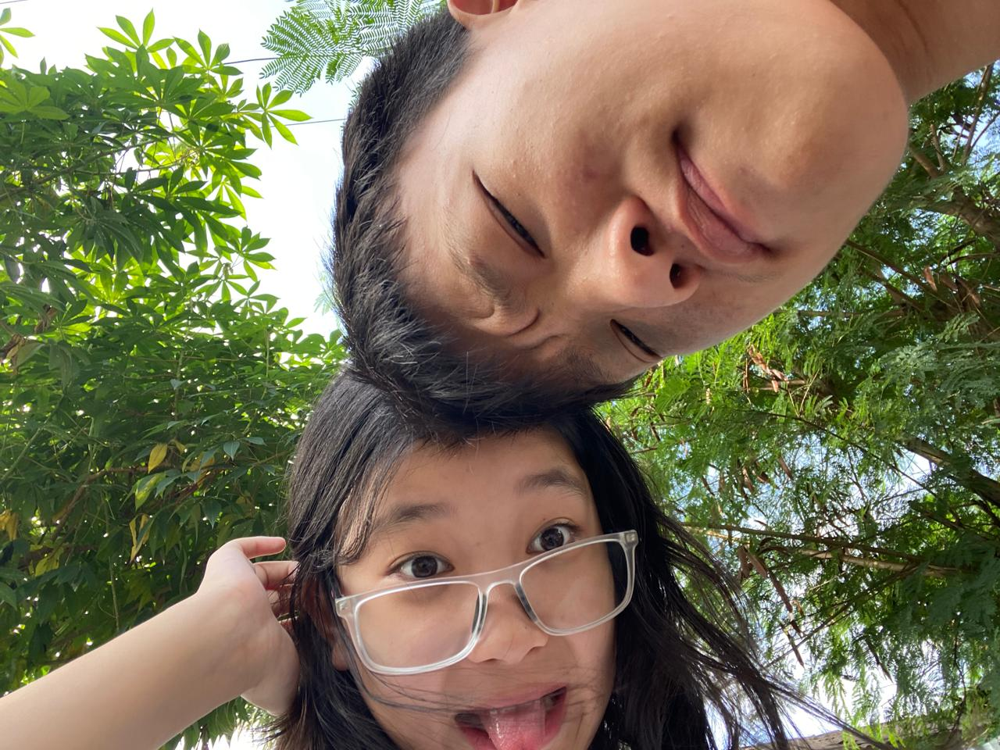
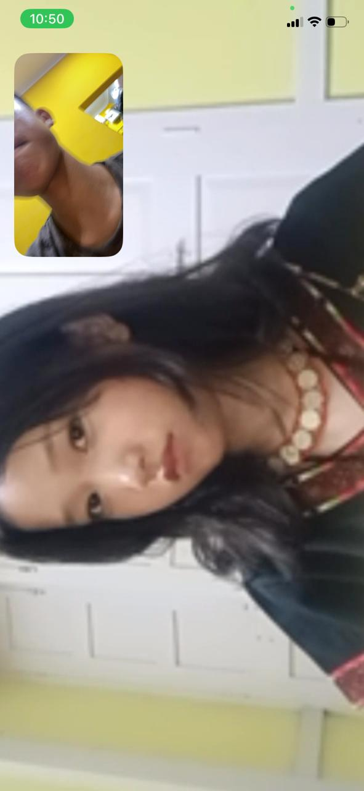
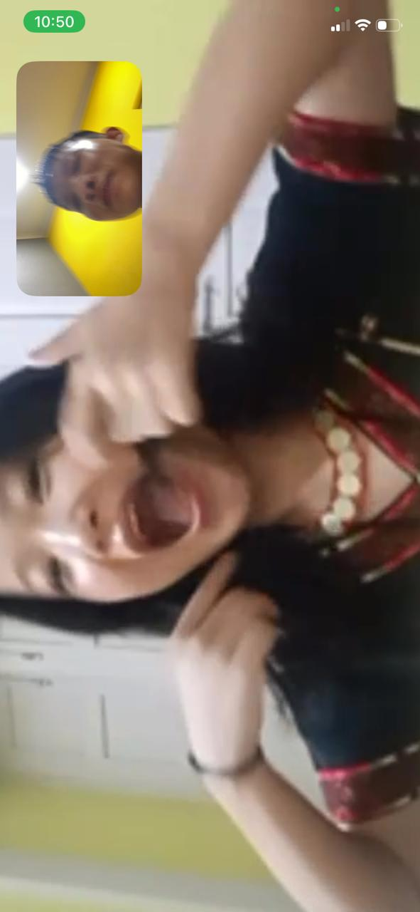
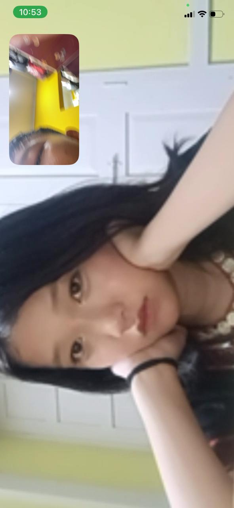
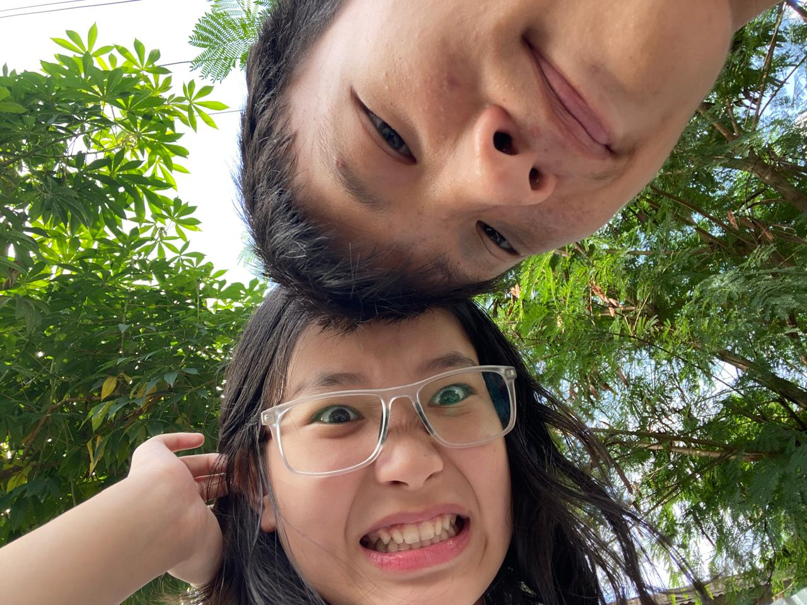
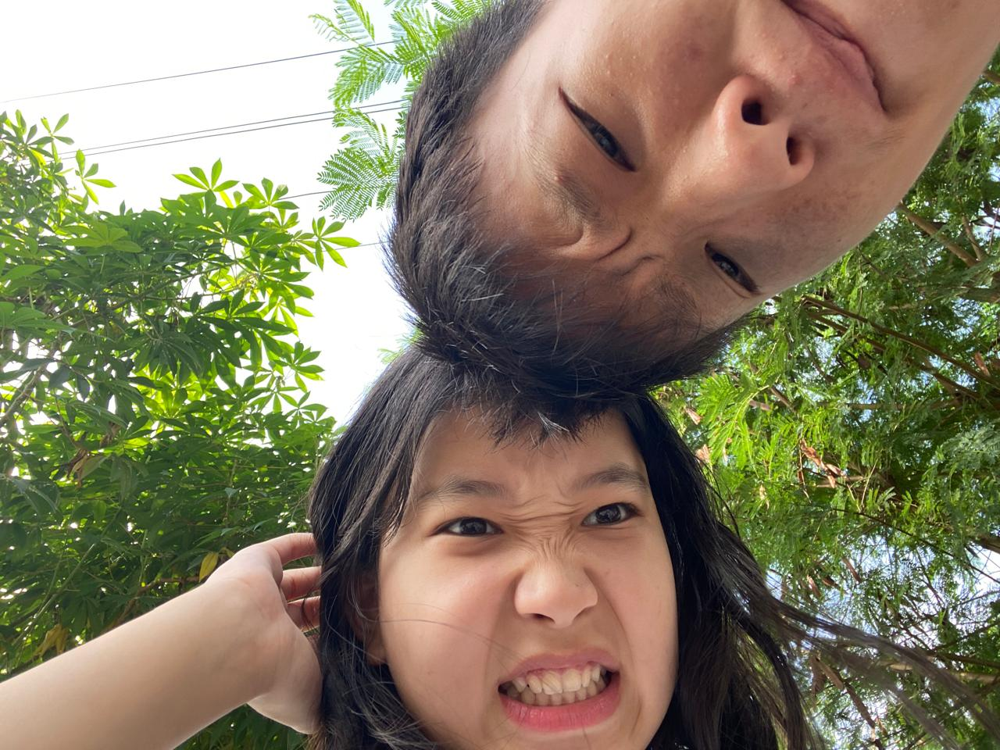
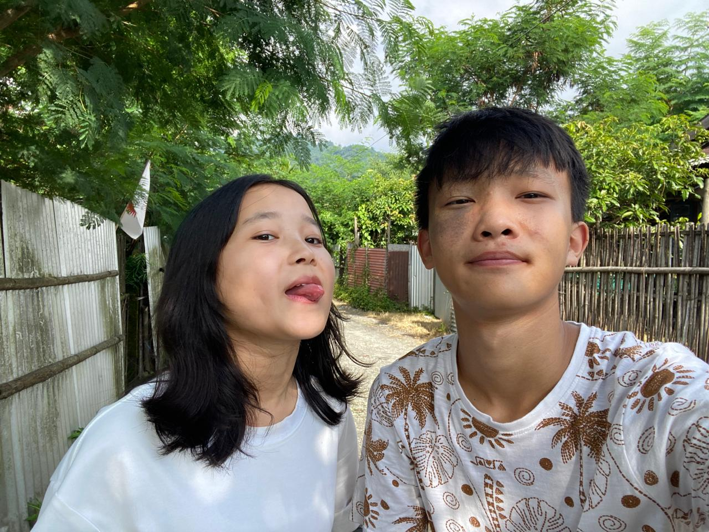
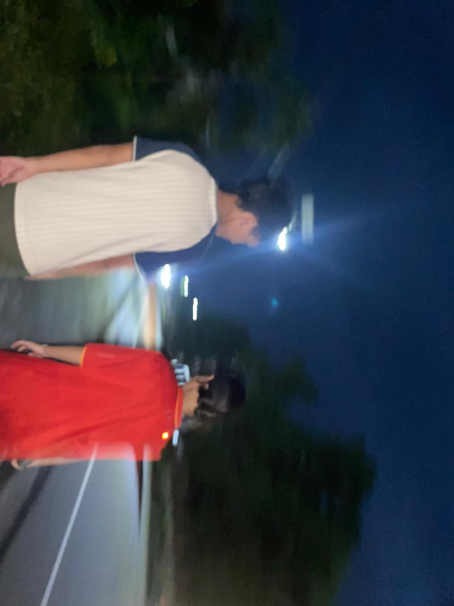
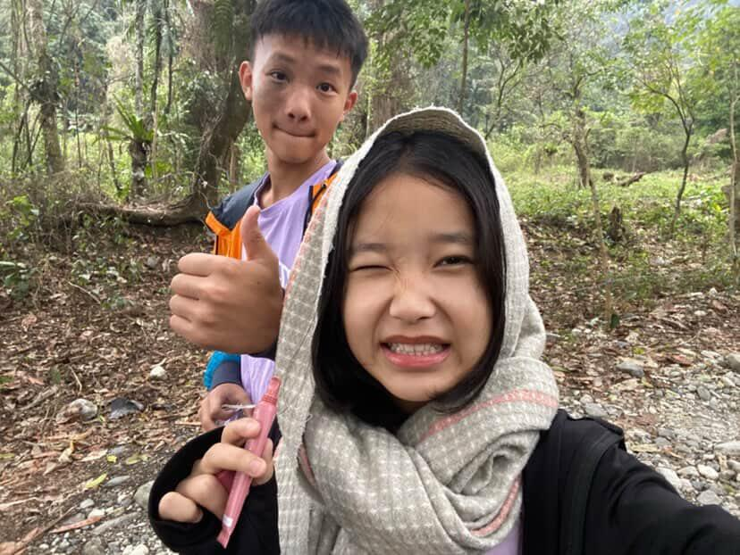

📸 our little memories
The silly. The sweet. The us.
Perfect poses aren't required. Sometimes the funniest pictures become the favorites.

You + me = chaos 😂

One of those random moments.

Why are we like this? 😭

Okay… this one is cute.

A memory worth keeping.

Just us. ❤️

Another page in our story.

More memories to come…
My favorite kind of day.

And this one makes me smile.